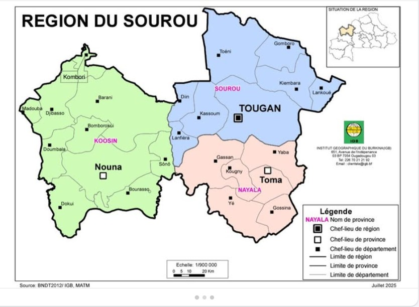
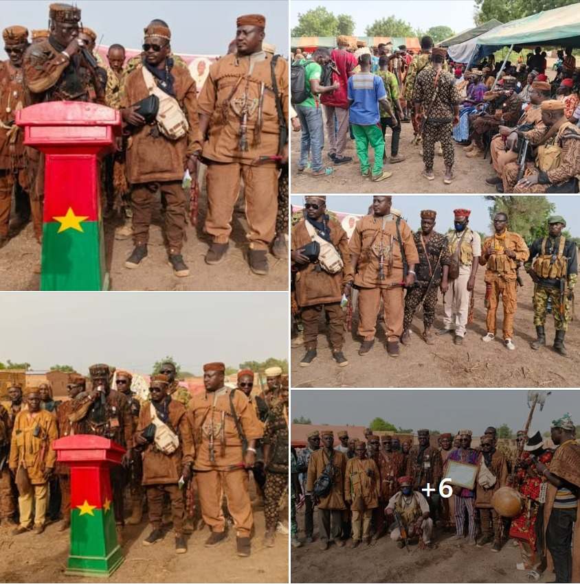
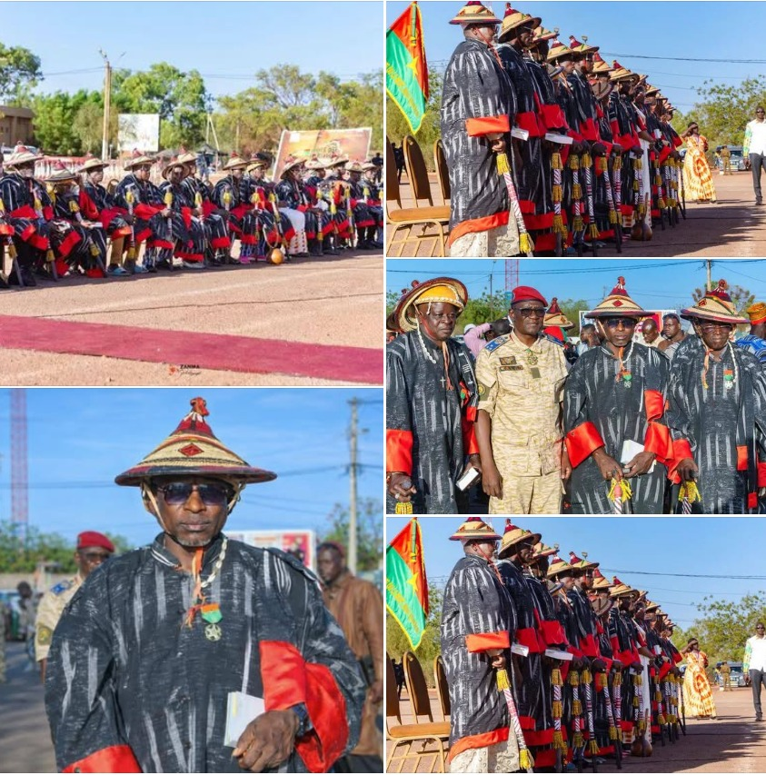
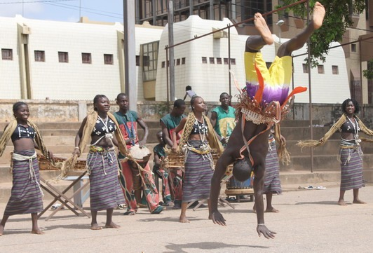
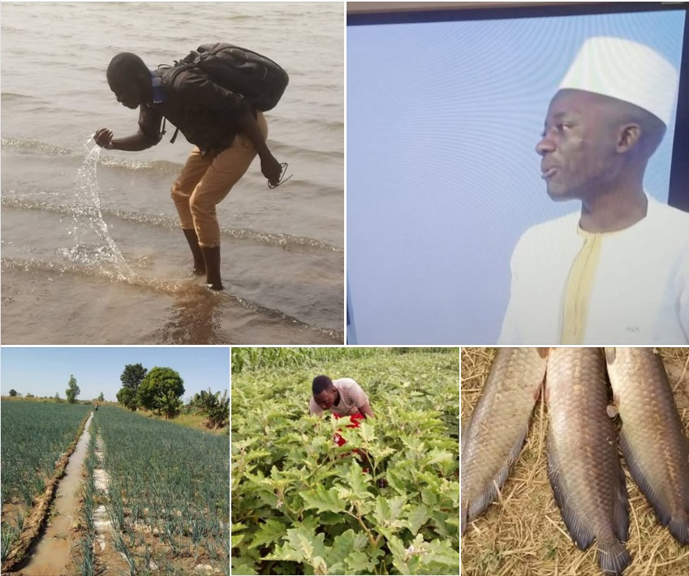
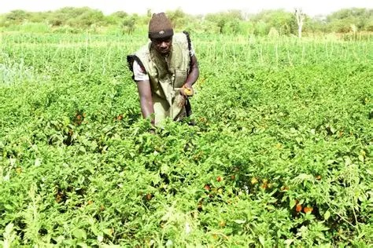
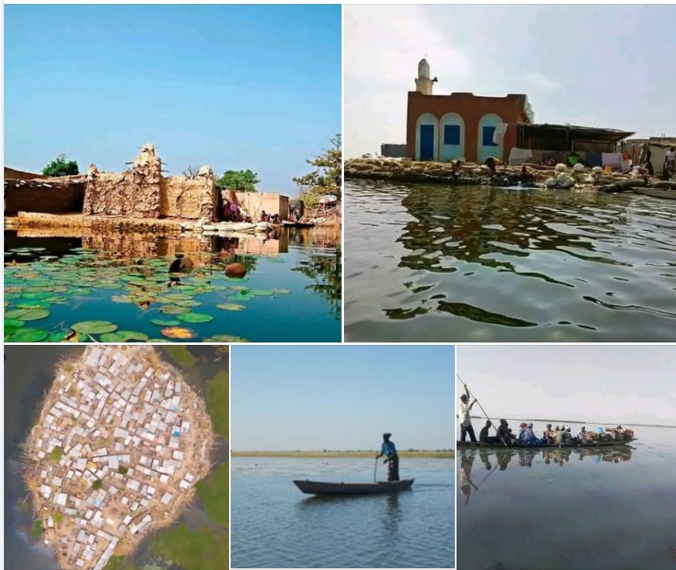
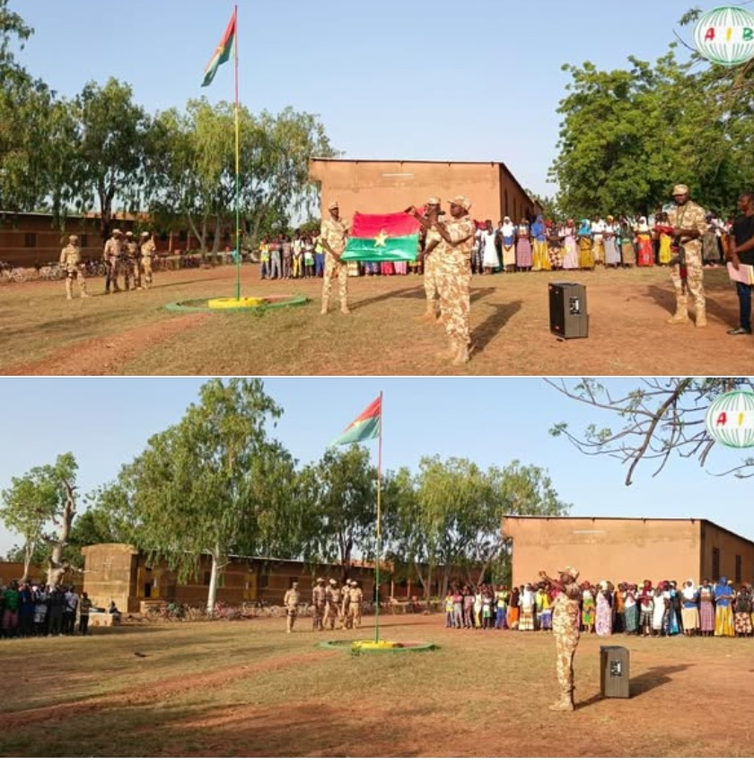

« Vallée fertile, terre d'avenir »
Pays : Burkina Faso
Statut : Région
Provinces : 3 (Kossi, Nayala, Sourou)
Chef-lieu : Tougan (province Sourou) / Di (région)
Création : 2 juillet 2025
Population (est.) : ~400 000 hab.
Densité : ~33 hab./km²
Communes clés : Nouna, Djibasso, Barani, Bomborokui, Tougan, Lanfiéra, Kassoum, Gassan, Toma, Yé, Kougny, Yaba
Coordonnées : 12°30'N, 3°30'O
Superficie : ~12 000 km²
Situation : Ouest du Burkina Faso
Frontières : Nord (Mali), Est (Yaadga), Sud (Bankui & Nando), Sud-Ouest (Guiriko)
Fuseau horaire : UTC+0
Indicatif téléphonique : +226

Présentation
La région du Sourou est l'une des quatre nouvelles entités administratives créées lors du nouveau découpage territorial annoncé en juillet 2025.
Cette réforme a porté le nombre de régions du Burkina Faso de 13 à 17, avec pour objectif de rapprocher l'administration des populations et de mieux valoriser les identités locales.
Située à l'ouest du pays, la région est connue pour sa vallée fertile du Sourou, propice à l'agriculture irriguée (riz, maïs, légumes).
Elle possède un fort potentiel en élevage et en pêche grâce à ses ressources en eau.
Le Sourou est traversé par d'importantes ressources en eau favorisant l'agriculture irriguée et les aménagements hydro-agricoles.
La région du Sourou est née d'une volonté de décentralisation renforcée, avec l'ambition de devenir un pôle agricole et culturel majeur du Burkina Faso.

Tradition et culture de la région du Sourou
La province du Sourou, située dans la région de la Boucle du Mouhoun, possède une richesse culturelle façonnée par la diversité de ses peuples, notamment les Marka, Bwa, Peulh, Dogon et Samogo.
Les chefs coutumiers jouent un rôle central dans la gestion des terres, la résolution des conflits et la préservation des rites.

La Danse des Samo
La danse des Samo dans le Sourou est une pratique culturelle rituelle et festive, exécutée principalement à la fin de la saison sèche pour appeler les pluies et célébrer le patrimoine communautaire.
À Sourou, la population Samo est principalement constituée de cultivateurs sédentaires vivant dans des villages organisés hiérarchiquement avec un chef de village, un chef de terre, des griots et des forgerons Overblog .

La province du Sourou est traversée par la rivière Sourou, qui est un affluent du Mouhoun.
Elle est frontalière de la région du Yaadga à l'est, du Mali au nord et à l'ouest, de la province de la Kossi au sud-ouest et de la province du Nayala au sud.

Culture de Tomate dans la region du Sourou
La vallée du Sourou constitue un espace transfrontalier stratégique entre le Burkina Faso (régions de la Boucle du Mouhoun et provinces de Sourou et Kossi) et le Mali (région de Mopti, cercles de Bankass et Koro)
La culture de la tomate dans la région du Sourou combine techniques maraîchères adaptées, irrigation, protection phytosanitaire et accès progressivement à la transformation industrielle, faisant de cette vallée un modèle régionale de production maraîchère rentable et résistante aux défis climatiques et économiques

Toma-îl
Un prestigieux village situé au plein cœur du fleuve sourou dans la commune rurale de Di dans la région de Sourou au Burkina Faso.

Tourisme & Culture
Ressources naturelles
Potentiel agricole 🌾
Potentiel éducatif 🏫

Potentiel commercial 🛒
Artisanat traditionnel
Spécialités culinaires
Carte de situation
Provinces
La région du Sourou est composée des provinces de Kossi, Nayala et Sourou.